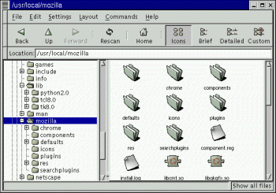

Learn XPI Installer Scripting By Example
This article uses the installer
script from browser.xpi install package as the basis for discussing
XPI installations in general. This installer script is
relatively short, but it exercises most of the important features of
the XPInstall API, and it can easily be used as a template for other
more general software installations. In this article, we use the unix
install file, but the installers for all the platforms are quite
similar, and you can easily take what you learn here and apply it to
installations on any platform that mozilla supports.
In this article:
About browser.xpi
browser.xpi is the XPI archive in which the main components
of the Mozilla browser are archived for installation. Mozilla cross-platform
installations use the XPI format as a way to organize, compress, and automate
software installations and software updates. A XPI is a PKZIP-compressed
archive (like ZIP and JAR files) with a special script at the highest level
that manages the installation. That installer
script, usually named install.js, is the subject
of this article.
First, a quick scan of the contents of the XPI file (which you can open using with any unzip utility) reveals the following high-level directory structure:
bin\
chrome\
components
defaults\
icons\
plugins\
res\
Note that this high-level structure parallels the directory structure of the installed browser very closely:

mozilladirectory on linux
As you will see in the installation script, the contents of the archive are installed onto the file system in much the same way that they are stored in the archive itself, though it's possible to rearrange things arbitrarily upon installation--to create new directories, to install files in system folders and other areas.
Overview of the Install Script
XPI install scripts are written in JavaScript using XPInstall Engine syntax
defined in the XPInstall API
Reference.
Most installation scripts, including the one discussed here, take the following basic form (in pseudo-code and with links to the sections in which these installation steps are documented):
if (verify_space()) {
err = add_dirs_and_files;
register_files;
if (err==SUCCESS) { performInstall() };
else { cancelInstall() };
}
As you can see in the code listing, the verification process at the top is coded in red; the file addition process, here part of the main installation block, is coded in blue; the registration part of the main installation block is in black; and the execution at the end of the main block is also in blue. If you choose not to register the installed software or do the verifications at the front end of the installation, then at a minimum, the install scripts must initialize, add the files to be installed, and execute.
Note also that when you call methods on the Install--as you
do so often in installation scripts (getFolder, initInstall,
addFile, and performInstall are all examples of
common Install object methods)--the Install object
is implicit; like the window object in regular web page scripts,
the Install object does not need to be prefixed to the method.
Initializing the Installation
All installations must begin with initInstall(). The initInstall()
method on the Install object creates a new installation for the specified
software and version. In the browser.xpi installation, this function appears
at line 20:
var err = initInstall("Netscape Seamonkey", "Browser", "6.0.0.2000110807");
If you call a method on the Install object before initInstall(),
you will get an error.
The initInstall method takes the following parameters: the
display name of the package, the name of the package as it appears in the
client registry, and the version, which can be expressed as a number or as
an InstallVersion object. In the example above, "Netscape Seamonkey" is the
display name, "Browser" is the registry name, and the version is "6.0.0.2000110807."
See initInstall in the XPInstall API Reference for more information
on the initialization process.
Verifying the Target
The first thing the installation script does when it's executed is to
check that there is adequate disk space for the software to be installed,
where the verifyDiskSpace function is called as a condition
of the main installation block that starts at line 24). In the code listing,
the verification process is in dark red:
// this function verifies disk space in kilobytes function verifyDiskSpace(dirPath, spaceRequired) { var spaceAvailable; // Get the available disk space on the given path spaceAvailable = fileGetDiskSpaceAvailable(dirPath); // Convert the available disk space into kilobytes spaceAvailable = parseInt(spaceAvailable / 1024); // do the verification if(spaceAvailable < spaceRequired) { logComment("Insufficient disk space: " + dirPath); logComment(" required : " + spaceRequired + " K"); logComment(" available: " + spaceAvailable + " K"); return(false); } return(true); }
In the verifyDiskSpace block, fileGetDiskSpaceAvailable
is called with dirPath as its expected input. This input is
defined in line 22, where getFolder() is used to assign a value
to the communicatorFolder variable representing the "Program" folder on the
local system:
var communicatorFolder = getFolder("Program");
spaceAvailable = fileGetDiskSpaceAvailable(dirPath);
spaceRequired, the other expected input to the verifyDiskSpace
function, is given as 17311 kilobytes on line 19. Inside the function, the
two sizes are compared and if the available space is larger than the required
space, the installation proceeds.
Adding Files and Directories (Full of Files) to the Install
Once you have verified that the target can accomodate
the software to be installed and initialized the actual
installation, you must add files and directories to the installation in order
to have them installed. In the browser.xpi install script, the
files are added in lines 26-41:
err = addDirectory("Program",
"6.0.0.2000110807",
"bin", // jar source folder
communicatorFolder, // target folder
"", // target subdir
true ); // force flag
logComment("addDirectory() returned: " + err);
// create the plugins folder next to mozilla var pluginsFolder = getFolder("Plugins"); if (!fileExists(pluginsFolder)) { var ignoreErr = dirCreate(pluginsFolder); logComment("dirCreate() returned: " + ignoreErr); } else logComment("Plugins folder already exists");
In this case, the files are contained within a single directory, so calling
the Install object's addDirectory method is sufficient
to queue all the files in the archive for installation. The addDirectory,
like addFile, handles both the source file location and the
target location. In the example above, all of the contents of the "bin" directory
in the archive are queued for installation, and the target of that installation
(when the installation is actually begun with a call to performInstall
at the end), is the communicatorFolder directory defined at
line 22 as "Program."
"Program" is one of a short list of keywords that can be used in place
of full path names in methods such as addFile. "Program" represents
the directory where software itself is installed (e.g., C:\Program
Files\ on win32 systems), as opposed to supporting directories like
"Components", "Chrome", or "Temporary" (see getFolder in the
XPInstall API Reference for a list of keywords).
Registering the Software
Registering software is sometimes a requirement of both the operating
system and of the Netscape 6 platform. When you install new chrome, for example,
like the browser.xpi install does, you need to alert the chrome
registry to these changes, so that skins, user preferences, packaging lists,
and localization bundles will all track the new software.
For registering software with the win32 operating system, the XPInstall
API provides two special Install objects, WinProfile and WinReg.
These two objects provide programmatic access to the Windows user profile
and the Windows registry, respectively. The browser.xpi install
script does not demonstrate the use of these objects, but see the XPInstall
API Reference for more information about registering software with the win32
operating systems and other operating systems.
To register new Netscape 6-based software (e.g., plug-ins, new components,
new themes, new packages) with the chrome registry, you must use the registerChrome
function of the Install object. If successful, this function returns a "0"
and makes entries into the installed-chrome.txt file in the chrome
subdirectory, which is then used to regenerate the various RDF files that
make up the chrome registry.
In lines 42-58,
var cf = getFolder("Chrome");
registerChrome(CONTENT | DELAYED_CHROME, getFolder(cf,"toolkit.xpi"),"content/global/");
registerChrome(CONTENT | DELAYED_CHROME, getFolder(cf,"browser.xpi"),"content/communicator/");
registerChrome(CONTENT | DELAYED_CHROME, getFolder(cf,"browser.xpi"),"content/editor/");
registerChrome(CONTENT | DELAYED_CHROME, getFolder(cf,"browser.xpi"),"content/navigator/");
registerChrome(SKIN | DELAYED_CHROME, getFolder(cf,"modern.jar"),"skin/modern/communicator/");
registerChrome(SKIN | DELAYED_CHROME, getFolder(cf,"modern.jar"),"skin/modern/editor/");
...
registerChrome is called as many times as there
are different directories that contain content that needs to be registered
with the chrome registry. Note that in the first few lines of this process,
new content from the XPI is being registered, and in the remainder, it is
new skin information. In this most common form of the registerChrome
function (it can also be used to support the now-deprecated manifest.rdf
style of installation archive), the three parameters represent, in order,
the chrome SWITCH used to indicate what kind of software is
being registered, the target destination of the software (e.g., the "Chrome"
folder in the example above), and the path within the XPI (or JAR theme archive)
where the contents.rdf file is located.
See registerChrome in the XPInstall API Reference for more
information about registering new packages with the chrome registry.
Executing the Installation
Once you have added all the files to the installation, the final step
is to actually execute the installation. Note that until this point, the
install calls you have been making on the Install
object are preliminary only. Recall that an install process takes the following
general form:
if (verify_space()) {
err = add_dirs_and_files;
register_files;
if (err==SUCCESS) { performInstall() };
else { cancelInstall() };
}
In this arrangement, the actual execution of the installation is checked against the errors returned from the addition of files to the installation, which may itself have been conditioned on some verification of version and necessary disk space.
The actual install code used to execute the installation appears in the install.js file as follows:
{
err = performInstall();
logComment("performInstall() returned: " + err);
}
else
{
cancelInstall(err);
logComment("cancelInstall() due to error: " + err);
}
}
else
cancelInstall(INSUFFICIENT_DISK_SPACE);
performInstall is the function used to execute the install
once it has been initialized and loaded, and it is the last step to installing
the software. Note that in the example above, the installation is cancelled
if the error code from the file addition process returns success (0), and
also cancelled outside the main block if the earlier verification process
is not successful.
Note also the comments that indicate the success of various steps in the
process--including the performInstall and cancelInstall steps--are written
to the install log using the logComment, described in the
following section.
Installation Logging
Logging is an important feature of the XPInstall API that can help you streamline and debug your installations. In the example in the Executing the Installation section and in many places in the installation script, the logComment API is used to write data to a log file that can then be reviewed when things don't go as planned.
The install log is created in the product directory by default (where the browser executable is). If the installation doesn't have proper permission, the install log is written to the user's profile directory. Respectively, these directories correspond to the "Program" and "Current User" keywords for the getFolder method.
Extending The Example
What does all this mean to you? How can this information be adapted for your own installations? In this final section, we describe the application of the XPInstall technology described here in the creation and deployment of a very simple installation script and installation archive (XPI).
Say you have a simple executable and a README file that goes with it, and you want to make it available for installation from a XPI. After putting these two files in a XPI (which, as described above, is simply a ZIP file with an install.js script at the top and a suffix of '.xpi'), the next step is to add an installation script to the XPI.
Minimally, the installation script must:
- Call
initInstallwith the name and version of the executable (the version is not optional, though you may or may not use the version in subsequent installations or updates) - Find somewhere to put the installed files. In the example below,
getFolderis used with the "Program" keyword to specify the browser's program directory as the target for installation. Since I am using NS6 right now on a Windows machine, that target directory is "C:\Program Files\Netscape\Netscape 6\". - Add files to the initialized installation using
addFile. - Call performInstall to execute the installation.
Here is an example of small but complete installation script.
var xpiDoc = "README_cdrip";
initInstall("My CD Ripper", "cdrip", "1.0.1.7");
f = getFolder("Program");
setPackageFolder(f);
addFile(xpiSrc);
addFile(xpiDoc);
if (0 == getLastError())
performInstall();
else
cancelInstall();
The example above shows this minimal installation. This install script does not include any version or disk space checking, very little error checking, only a single executable, no registration, and no commenting. It does, however, take the executable and the README file and install them on the user's system. Note also that for the installation script in a XPI to be automatically triggered from a web page, you must use a "trigger script." The following InstallTrigger function, called from an event handler on a regular web page, will point to the remotely-hosted XPI (called here 'cdrip.xpi') and trigger its installation:
{
xpi={'CD_Ripper':'cdrip.xpi'};
InstallTrigger.install(xpi);
}
...
<a href="#" onclick="putIt();">install the CD Ripper Now!</a>
See the InstallTrigger object in the XPInstall API Reference for more information on triggering installations.